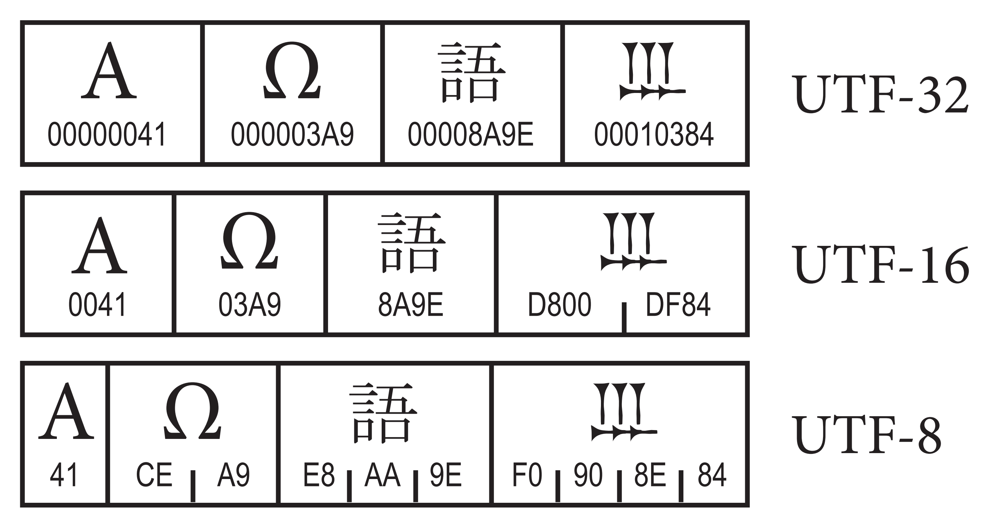
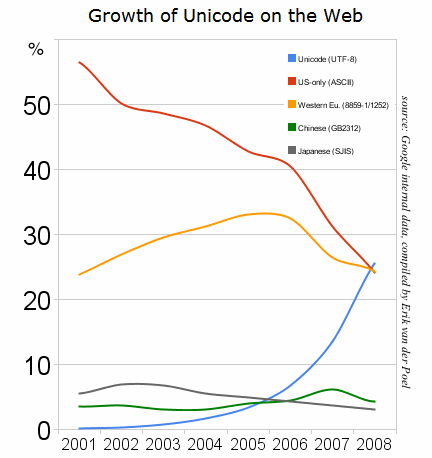
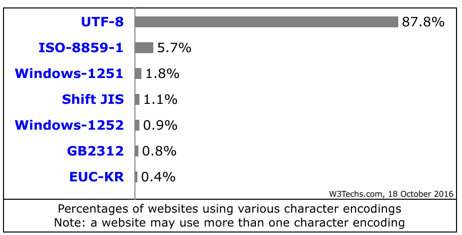
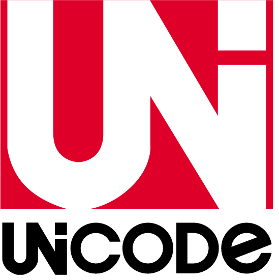

Pourquoi
strlen("🍕") != 1 ?
Et la petite histoire d'Unicode
@damienalexandre

PHP, Elasticsearch, Symfony, Emoji

Conseil, réalisation, audit, expertise et formation
…Poney, Guinness et gif animé.
Qu'est ce que le texte ?
Rappel des bases
- Un ordinateur parle en 1 et en 0
- Nous voulons parler en texte
- Il faut traduire les lettres en bits
- Et inversement
Il a fallu se mettre d'accord
⌨ 📠 💻 🖨
L'encodage
Une liste de règles pour transformer dans les deux sens une donnée.
Dire que « 01100001 » ça vaut « a ».
Au début c'est le chaos 👴
- Chaque constructeur encode à sa façon
- Un document quitte rarement le système dans lequel il a été écrit
- L'intéropérabilité ? 😰
ASCII arriva
🇺🇸 American Standard Code for Information Interchange
Publié en 1963,
7 bits par caractère, donc 127 possibilités.
Pas top pour le reste du monde
- Allemand : Schildkröte 🐢
- Suédois : Skål! 🍻
- Français : Éléphant 🐘
Avec seulement 95 lettres imprimables on ne va pas bien loin…
Il reste 1 bit !
- En 1972, les premiers CPU 8 bits arrivent
- Passer à 8 bits permet de mettre 255 caractères
- Les européens se sont dit : « la voilà notre chance ! »
- Chaque pays a fait sa variante d'ASCII
é, ß, ü, ä, ö, å
Arrivé ISO-8859 & co
- ISO 8859-2 Western and Central Europe
- ISO 8859-3 Turkish, Maltese plus Esperanto
- ISO 8859-4 Lithuania, Estonia, Latvia and Lapp
- ISO 8859-5 Cyrillic alphabet
- ISO 8859-6 Arabic
- ISO 8859-7 Greek
- ISO 8859-8 Hebrew
- ISO 8859-9 Western Europe with amended Turkish
Arrivé ISO-8859 & co
- ISO 8859-15 Added the Euro sign from ISO 8859-1
- ISO 8859-11 Thai
- ISO 8859-14 Celtic languages
- Windows-1253 for Greek
- Windows-1254 for Turkish
- Windows-1255 for Hebrew
- Windows-1258 for Vietnamese
- …
Pour écrire un article en 🇷🇺 Russe sur le 🇸🇪 Suédois
"Skål!" означает здоровье на шведском языке.
On crée un nouvel encodage ?
Et Internet arriva
- On s'échange des contenus dans plusieurs langues
- Deviner l'encodage d'un document... ça marche pas trop
- Hacker ASCII a ses limites
Deviner l'encodage
- Saisir "Bush hid the facts" dans notepad
- Sauver, fermer, ouvrir
- S'affiche alors "畂桳栠摩琠敨映捡獴" !
Windows provoquait l'interprétation en UTF-16LE d'un texte encodé en ASCII.
L'age d'or du Mojibake
L'ISO-8859-1 c'est génial !
Vous voulez voir du Mojibake ?
Soumettre une conférence avec un Emoji dans le titre...
Désolé les organisateurs ;-)
Introducing UNICODE
Publié en 1991, avant la Playstation, le HTML et les Pokémons.
- universal (addressing the needs of world languages)
- uniform (fixed-width codes for efficient access)
- unique (bit sequence has only one interpretation into character codes)
Unicode 1.0
- 65536 code points disponibles, pas mal !
- Stocké sur 16 bits
- Adopté par JavaScript, C, Java...
- Enfin une façon universelle de représenter du texte !
- 1 caractère = 2 octets (UCS)
Unicode 1.0
- 1991 : 7,161 caratères (Arabic, Greek, Tamil, Thai…)
- 1992 : 28,359 caratères (début de l'ajout des CJK)
- 1993 : 34,233 caratères (ajout du Korean)
En fait 16 bits c'est pas suffisant
UTF et Unicode 2.0
- Publié en Juillet 1996
- Unicode ne parle plus en caractères mais en code point
- 1,114,112 code point possible
- Unicode = la liste des caractères
- UTF = l'encodage
UTF : Universal Character Set
- Spécifie comment stocker un code point Unicode
- Chaque code point a une représentation exacte
- Disponible sur 8, 16 ou 32 bits par code point
UTF-8
- Le plus répandu sur le Web, utilisé par Unix
- Utilise… 8 bits ou plus pour chaque code point
- 100% compatible avec ASCII : le premier octet mappe directement les codes ASCII
- Plus d'1 octet pour tout ce qui n'est pas ASCII
UTF-16
- Très utilisé aussi : Windows, NTFS, JavaScript (migration facile depuis UCS / Unicode 1.0)
- Utilise toujours des groupes de 16 bits pour stocker un code point
- Si le code point est en dehors de la BMP, utilise des surrogate pairs
- Gâche de la mémoire pour l'ASCII
La BMP ?
- Basic Multilingual Plane
- Unicode est séparé en 17 espaces de 65,536 codes
- Le plane 00 c'est la BMP, les caractères les plus courant
- Les autres planes sont appellés supplementary ou astral
UTF-32
- 32 bits par code point
- On peut tout rentrer mais on gâche plein de place
- Personne n'utilise ce truc... Son seul avantage c'est la taille fixe
Les différents UTF
Le BOM
- Dit à un logiciel "Ce fichier est en Unicode"
- Pas obligatoire mais souvent utile
- Peut aussi donner l'ordre des octets pour UTF-16 et UTF-32...
En ISO 8859-1 il s'affiche , ça vous rappelle rien ?
L'adoption est rapide
L'adoption est rapide
Unicode aujourd'hui
- Tellement grand qu'il y a des espaces à usage privé
Ça permet d'avoir le Klingon 🖖 - Unicode 9 (Juin 2016) contient 267,819 code point
- Unicode 6 (2010) a incorporé les 🎉 Emoji 🍺 !
- Décrit les code point de 135 écritures, presque tout le langage écrit actuel
- Recommandé par le W3C depuis HTML 4.0
Go Unicode or stay home
Comment on compte la longueur d'un texte ?
- On sait que du texte c'est une suite d'octets
- En fonction de l'encodage ces octets ont un sens
- Certains caractères peuvent être composés
- On compte en code point ? En octet ? En grapheme ?
- La lettre "Œ" par exemple c'est 1 ? 2 ?
Œ, l'e dans l'o
- Unicode Character 'LATIN CAPITAL LIGATURE OE' (U+0152)
- En UTF-8 il faut deux octets : 0xC5 et 0x92
- Pour information il est présent dans ISO-8859-15 mais pas dans ISO-8859-1 !
La taille de Œ
// PHP :
echo strlen("Œ"); // 2, nombre d'octets bête et méchant
echo mb_strlen("Œ"); // 1
// JavaScript :
'Œ'.length; // 1
// Python :
>>> len('Œ') // 2
>>> len(u'Œ') // 1La taille de 🍕
// PHP :
echo strlen("🍕"); // 4, nombre d'octets bête et méchant
echo mb_strlen("🍕"); // 1
// JavaScript :
'🍕'.length; // 2
// Python :
>>> len('🍕') // 4
>>> len(u'🍕') // 1Taille en octets, sauf JavaScript
- En JavaScript si vous sortez de la BMP, UTF-16 nécessite deux paires d'octets
- "\uD83C\uDF55" = 🍕 = length de 2 car deux paires UTF-16
- C'est votre navigateur qui sait combiner ces deux surrogates pairs en un caractère Unicode, pas le moteur JavaScript
strlen() et PHP
PHP ne supporte pas Unicode… Mais fini par être tout à fait compatible ! Tout est traité au niveau de l'octet :
echo strlen("Œ"); // 2
echo strlen("🍕"); // 4Le texte en PHP
Tout est octet :
echo "🍕"[0]; // �
Accéder à un caractère qui fait un octet fonctionne donc très bien, mais au delà ce n'est plus possible.
Pour corriger ça, on utilise les fonctions Multibyte : mb_*
utf8_encode
Ça fait quoi exactement du coup ?
« Encodes an ISO-8859-1 string to UTF-8 »
WTF NAMING 😮
Préférez iconv ou mb_convert_encoding.
Fonctions Multibyte
mb_substr("🍕", 0, 1, 'UTF-8') == "🍕"- mb_check_encoding
- mb_convert_encoding
- mb_convert_case
- mb_strlen
- mb_strtolower
- mb_parse_str...
Faire une application Unicode Ready
📏 Quelques régles a respecter 📐
Pour vos fichiers
Sauvez vos fichiers en ASCII compatible (UTF-8 mais pas UTF-16),
sans quoi le parseur ne
trouverait pas <?php, ", $...
zend.multibyte
- Depuis PHP 5.3 :
- Dit au parseur comment votre fichier doit être lu
declare(encoding='UTF-16LE');- Nécessite
zend.multibyte=1 - Nécessite
--enable-zend-multibyteà la compilation - Seulement utilisé dans de rares cas (au Japon)
default_charset
- Depuis PHP 5.6 :
- UTF-8 est défini par défaut 😀
- Ça envoie le header
Content-Type - C'est l'encoding par défaut pour les fonctions htmlentities(), htmlspecialchars(), iconv…
ini_set('default_charset', 'BIG5');- A utiliser sur tous les projets !
L'échange de données
🖥 ↔ 🐘 ↔ 💾
- Navigateur vers PHP vers Base de données
- Échange de données = encodage
- Le texte n'informe pas sur son encodage
- Il faut donc ajouter l'information !
PHP et le navigateur
- Dans le HTML :
<meta charset="utf-8" /> - WTF 😧 il faut lire le texte pour savoir comment le lire !
Content-Type: text/html; charset=utf-8
Beaucoup plus efficace 😎- Aussi utilisé pour les envois de formulaire
PHP et la base de données
Notre base de données a son propre encodage :
CREATE TABLE `ponies` (`description` TEXT)
ENGINE=MyISAM DEFAULT CHARSET=utf8;La communication a elle aussi un encodage...
PHP et la base de données
$pdo = new PDO(
'mysql:dbname=ponies;host=localhost',
'root', '');En quoi le texte est-il transféré ? Ça dépend de plein de choses mais c'est très souvent "latin1" par défaut !
$pdo = new PDO(
'mysql:dbname=ponies;host=localhost;charset=utf8',
'root', '');
// ou juste après connexion :
'SET NAMES utf8;'Un mot de passe pour le user root? 😂
Chez moi ça marche, j'enlève
SET NAMES utf8;

Ça marche sans SET NAME 😧
- INSERT "Loïck" en UTF-8 : 6 octets, 5 chars
- Transmission en latin1…
- Loïck est transmis en Loïck : 6 octets, 6 chars
- Loïck est stocké en UTF-8 : 8 octets, 6 chars
- Puis on SELECT
- Loïck UTF-8 transmis en latin1 : 6 octets, 6 chars
- Loïck affiché en UTF-8, ça donne Loïck !
Évitez les conversions
Je vous présente Loïck, et il veut s'inscrire sur votre site
Votre responsabilité d'artisans du Web
Sur les 260 000 possibilités qu'offre Unicode,
pourquoi limiter ?
🔒 Le sentiment de la sécurité ? 🛡
Parlons de sécurité !
😈
Normalisation
- Vous voulez supporter Unicode à fond :
username = "🍕" valide ! - Vos utilisateurs saisissent n'importe quoi
- Vous voudriez vous protéger contre certains usages…
- é = é mais é !== é
- Caractères invisibles
- Homoglyphs…
Normalisation
- Username "🍕" autorisé
- Il faut s'assurer qu'on a qu'un seul compte "🍕"
- Ne pas accepter la création du compte
Kevinsikevinexiste déjà Kevin != kevin- On met en miniscule ?
- Unicode code point 'KELVIN SIGN' (U+212A) => "K"
- Ceci est un homoglyph
Normalisation
- KELVIN SIGN, K UPPERCASE, K LOWERCASE :
- Kevin : u"\u212A\u0065\u0076\u0069\u006E"
- Kevin : u"\u004B\u0065\u0076\u0069\u006E"
- kevin : u"\u006B\u0065\u0076\u0069\u006E"
- Doit être idempotent, et à jour !
Le cas Spotify (2011)
- Possible de créer deux comptes "Kevin"
- Reset du mot de passe de l'autre compte !
- La cause ? Leur librairie pour normaliser ne supportait que Unicode 3.2
- Si caractère inconnu, lever une exception !
https://labs.spotify.com/2013/06/18/creative-usernames/
La normalisation
Unicode définit comment normaliser du texte pour le tri, la comparaison, la recherche…
ẹ́
- e + ◌́ + ◌̣
- e + ◌̣ + ◌́
- ẹ + ◌́
The Right Way©
$ARing = "\xC3\x85"; // Å (U+00C5)
$ARingComposed = "A"."\xCC\x8A"; // A◌̊ (U+030A)
$norm1 = Normalizer::normalize(
$ARing, Normalizer::FORM_C
);
$norm2 = Normalizer::normalize(
$ARingComposed, Normalizer::FORM_C
);
var_dump($ARing === $ARingComposed); // FALSE
var_dump($norm1 === $norm2); // TRUEL'important c'est d'être consistant et idempotent.
Pas comme GitHub...
GitHub password reset (2016)
- Demande de mot de passe oublié
- L'email est normalisé au moment du lookup en BDD
- Un token pour l'email A est généré et envoyé à l'email B !
- mike@example.org != mｉᏦᎬ@example.org
- Attaque par homoglyph 😈
https://bounty.github.com/researchers/jagracey.html
Attaques sur le stockage
Phabricator (2014)
- Inscription limitée par domaine (*@allowed-domain.com)
attacker@gmail.com🍕@allowed-domain.com- Le check du domaine dit ok ✅
- Seul
attacker@gmail.comest stocké dans MySQL ! - WIN ! 🏆
https://hackerone.com/reports/2233
Wordpress (2014)
- HTML autorisé dans les commentaires
<abbr title='Web🍕log'>blog!</abbr>- HTML valide ✅
- Seul
<abbr title='Webest stocké dans MySQL ! - HTML cassé, réparé avec un second commentaire :
coucou' onmouseover='alert(1)'- WIN ! 🏆
https://cedricvb.be/post/wordpress-stored-xss-vulnerability-4-1-2/
Charset "utf8" dans MySQL
utf8dans MySQL ne supporte pas tout Unicode- Seulement 3 octets
- Seulement la BMP 😢
- Un caractère inconnu provoque la fin de la chaine
"utf8mb4" pour tous !
utf8truncate vos contenusstrict modeest désactivé par défaut 😞
Utilisez utf8mb4 !
Quelques Pro-tips ©
- Utilisez http://editorconfig.org/
[*] charset = utf-8 - Toujours forcer le charset de vos connexions MySQL
- Ne plus utiliser
utf8maisutf8mb4 - Normalisez avec les bons outils, et de façon homogène
- GO UNICODE !
A vos questions !
Merci pour votre attention 😘
PHP 6 👋
PHP 6 et Unicode
- Le Web est Unicode
- PHP est le Web
- PHP doit avoir Unicode !
PHP 6 et Unicode
- Démarré en 2005
- Ajout du support complet dans toute l'API
- N'a jamais abouti faute de traction
- Mais on peut rêver !
PHP 6 et Unicode
$string = "🍕🐘";
echo $string[0];
=> 🍕
$string[1] = "🐍";
echo $string;
=> 🍕🐍
echo strlen("🐘");
=> 1
PHP 6 et Unicode
class 🍣 implements 🍚, 🐟 {
$🍶 = true;
$⛔ = [
"🐱"
];
}En vrai ça fonctionne déjà pour les classes